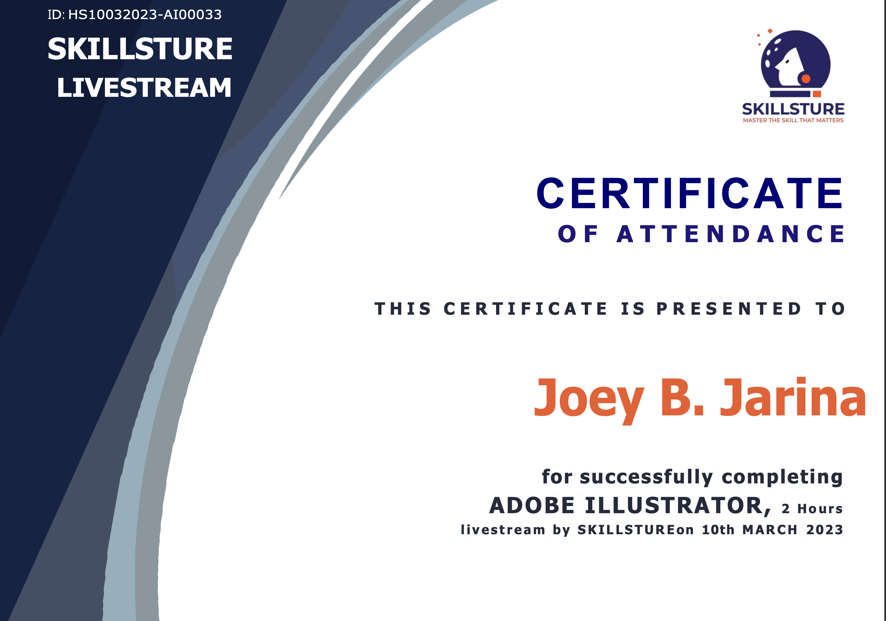
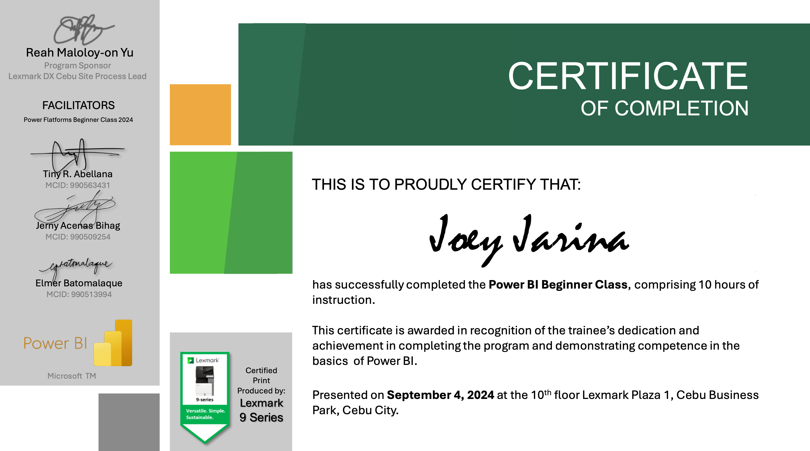
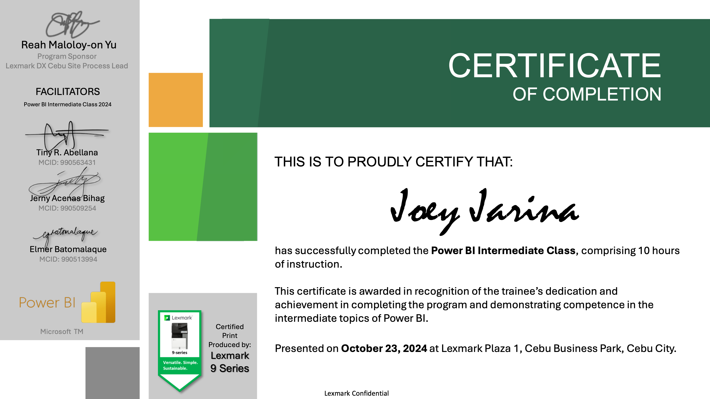

I am currently learning HTML.
Learning to code is fun, but at the same time, it can be challenging.
I am excited to dive deeper into HTML, CSS, and JavaScript.
I don't have any prior experience in coding, but I am eager to learn because I want to create my own website.
I know I still have a long way to go, but slowly and surely, I'll get there.
Let me introduce myself.
My name is Joey. I'm 38 years old and married. I am the fifth son in the family, and I am from Cebu, Phillipines.
I currently work as a Business Analyst at Xerox, and I've been with the company for almost five years.
Over time, I've attended various trainings to enhance my skills and knowledge, such as:




In 2023, I won the Best In JDI Project
awarded for my work on the Evaluation Logic Enhancement for Error 116 during the R2R - Finance Eureka 2023.
I also served as an EHS Representative, and through my dedication, I received the Manager's Appreciation Award
.

My wife is from Cainta, Rizal. We got married on June 18, 2025.
She is a State Auditor III at COA and has been with the organizaton for almost 11 years.
We are currently in a long distance relationship because of our work locations, but we make sure to visit each other whenever we can.
On one personal note,
I start my mornings with a prayer, thanking God for another day and for all the blessings I've received.
I also enjoy having a cup of coffee before beginning my day.

Here are some of the things I love doing:
I also have a YouTube channel called Fur Babies, where I share videos about my cats. I have four of them: Polly, Millie, Luna, and Minggay.
Polly and Millie are siblings, and I got them from my neighbor. We bought Luna when she was just a few months old at a reasonable price.
I adopted Minggay after finding her abandoned at the back of our house.
Feel free to visit my channel to get to know them better, and don't forget to like and subscribe!
Check my LinkedIn profile.
Send me an email.
Thank you for your time.